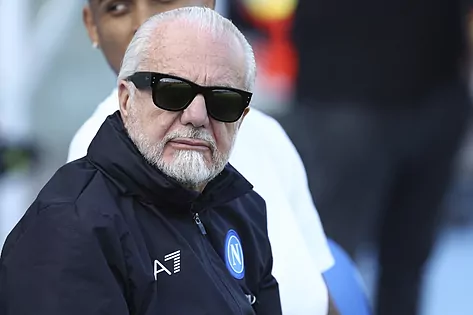
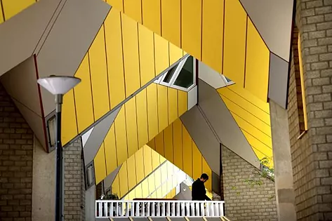

El presidente acumula polémicas y un Scudetto, el del último curso, tras 19 años al frente del club. "Sólo mira por su dinero", dicen en la ciudad, donde no le perdonan su acento romano.
El Grand Hotel Vesubio de Nápoles está situado en plena Vía Parténope, el más antiguo de los núcleos de la ciudad, llamada así en honor a la sirena de la mitología griega. A su izquierda, la Fontana del Gigante. A su derecha, la Villa Comunale, uno de los jardines históricos de la urbe. De frente, el inmenso Golfo de Nápoles con el Vesubio en su altar. En las habitaciones de dicho edificio se aloja esta semana el Real Madrid y en una de sus salas principales, en la noche del 10 de octubre de 2019, Aurelio de Laurentiis, presidente del Nápoles, despidió a Carlo Ancelotti. Otro pulso ganado por el maniático «capo», como le dicen por las decadentes calles de la ciudad, del actual campeón del Calcio. «Es el que lo gobierna todo».
Aurelio, hijo y sobrino de los productores de cine Luigi y Dino de Laurentiis, nació en Roma, aunque en su genealogía sólo hay sangre napolitana. Es rocambolesco, estrambótico y pintoresco... Y el dueño de Filmauro y Cinettità Studios, y desde 2004, para desgracia y gloria de los tifosi, máximo accionista de la Società Sportiva Calcio Napoli.
La ciudad vive el fútbol de una manera pasional y casi eclesiástica. Maradona reina en cada rincón de cada calle y desde hace unos meses en el nombre del estadio de fútbol, y aunque a veces los propios napolitanos tienen dudas, «nada es más grande que el Napoli». Uno es el profeta, el club la religión. Y por eso, por ese amor incondicional y desgarrado por el equipo de fútbol y por el propio deporte, Nápoles odia a De Laurentiis. Lo explican los taxistas, enrabietados con su presidente por no gastar dinero no sólo este verano, sino «durante toda su etapa al frente del club», como cuenta Vincenzo. «De Laurentiis sólo mira por su dinero, no lo gasta en jugadores. Por eso la gente le odia», explica durante un viaje.
Pero por encima de todo, no le perdonan que su acento suene a la capital. «Cuando abre la boca, suena a romano. Eso no se lo perdonan», asegura un periodista local. Pero por encima de todo, lo que no le perdonan es que dijera que no le gusta la pizza napolitana y que prefería la romana. «No es buena. No me gusta, prefiero la romana», dijo, provocando el rechazo en su ciudad.
Esa turbulenta relación con los tifosi también la explican los medios locales, tímidos en hablar con nombre y apellidos. Lo hace Enzo Credendino, de CalcioNapoli24 TV: «Es el único que manda. Siempre ha tenido mucho ojo a nivel financiero, pero el tiempo le ha dado la razón», explica. Y es que el año pasado el destino convirtió a los napolitanos en campeones del Scudetto por primera vez desde la época de Maradona. Su tercer título.
Esa turbulenta relación con los tifosi también la explican los medios locales, tímidos en hablar con nombre y apellidos. Lo hace Enzo Credendino, de CalcioNapoli24 TV: «Es el único que manda. Siempre ha tenido mucho ojo a nivel financiero, pero el tiempo le ha dado la razón», explica. Y es que el año pasado el destino convirtió a los napolitanos en campeones del Scudetto por primera vez desde la época de Maradona. Su tercer título.
Un trofeo que puso la guinda al sueño de De Laurentiis y que selló la paz con el sector ultra del antiguo San Paolo. «Los ultras siempre han estado contra él y le han contestado», resume Credendino, pero lejos de esconderse, el propietario puso su cara delante de los violentos, se reunió con ellos y les terminó doblegando con el mismo discurso que usaban contra él: «Nápoles somos nosotros». «Por eso es el capo» cuenta una fuente cercana al club.
De Laurentiis compró el Nápoles en Serie C, en pleno drama económico y social en la ciudad, y lo ha elevado hasta hacerlo campeón de Italia, aunque para los tifosi no todo haya sido perfecto. «El Scudetto es de Spalletti (actual seleccionador italiano), de Kvaratskhelia y de Osimhen. No de él. Él se ha quedado nuestro dinero», señala Jacopo, aficionado, a los pies del estadio Maradona.
«Este verano no ha gastado mucho dinero, ha rechazado vender a Osimhen, ha dejado irse a Spalletti y ha elegido él mismo a Rudi García, que estaba en Arabia. Quiere demostrar que el título es de él», explica Credentino. Cristiano Giuntoli, mano derecha de De Laurentiis, también se fue en julio para fichar por la Juventus, algo considerado alta traición en el sur de Italia.
Y es que más allá del fútbol, De Laurentiis es temido en los despachos. Agentes, jugadores y entrenadores que han trabajado en una misma mesa con él dan fe de que es «uno de los negociantes más duros del mundo del fútbol». «Está loco», contesta un futbolista que le tuvo bastante cerca. Cuenta otro directivo que en una reunión de la Serie A, se levantó de la mesa y les dijo al resto de presidentes: «Sois unos mierdas, me vuelvo al cine». Y un agente que negoció con él admite que terminó aceptando sus términos porque es «el hombre más pesado que he conocido».
Investigado por el fichaje de Osimhen por 70 millones, una cifra que en ese momento estaba fuera de mercado, se enfrenta ahora a la necesidad de vender el Bari, club también bajo su propiedad, porque ha ascendido a la Serie B. Una polémica fruto del éxito, como sus 19 años en el Nápoles campeón.
Sinónimo de la mejor arquitectura, la segunda ciudad de los Países Bajos sigue sorprendiendo al mundo con proyectos innovadores. Museos, modernos mercados y coquetos restaurantes animan la escena de una urbe que siempre se adelanta a los tiempos.
Si hay un lugar donde el dicho de resurgir de sus cenizas cobra todo el sentido, quizá sea Róterdam. La segunda ciudad de Países Bajos fue bombardeada por los nazis el 14 de mayo de 1940; en apenas 15 minutos todo su centro histórico quedó arrasado y convertido en una escombrera. Sólo la iglesia de San Lorenzo y el Ayuntamiento se mantuvieron en pie. Cuando llegó el momento de reconstruir la ciudad en los años 50-60, se arriesgó con un proyecto innovador, donde la arquitectura marcaría la diferencia y pondría al peatón en el centro de ese nuevo Róterdam. Vanguardista y sorprendente, amable y con la sostenibilidad como compañera de viaje, la visita a esta urbe, con el puerto más importante de Europa, tiene paradas obligadas para disfrutarla como se merece.
MARKTHAL. Este impresionante edificio construido en 2009 y firmado por el estudio MVRDV representa una herradura invertida. Dentro hay viviendas, pero también un estupendo mercado gastronómico con puestos japoneses, vitrinas llenas de quesos y especias marroquíes, barras de café de especialidad, corners en los que probar el típico stroopwafel (una galleta) y, cómo no, espacios donde no faltan las tapas españolas. Cuando montan el mercadillo justo enfrente, la zona se llena de vida entre disfraces, bisutería, ropa y locales con carros a rebosar de frutas y verduras.
CASAS CÚBICAS. Consideradas un icono de la ciudad, se encuentran a pocos metros de Markthal. Obra de Piet Blom y construidas en 1970, desde el exterior son alucinantes pero casi lo es más visitar por dentro una de estas casas amarillas e inclinadas 45 grados. Hay un hostal para los que quieran empaparse más de la historia. Tras recorrer sus recovecos, es hora de elegir uno de los apetecibles cafés y restaurantes con vistas al canal. Siempre hay buen ambiente en la zona; por las noches iluminan las terrazas y la estampa es de postal.
DEPOT. Este macetero gigante se ha convertido en uno de los últimos atractivos de la ciudad holandesa. El adjetivo espectacular se queda corto para describir esta obra del estudio MVRDV. Un total de 1.664 espejos recubren su forma de campana invertida, que se alza en medio del Parque de los Museos. Obligadas las fotos al verse reflejado en la estructura, al igual que contemplarlo desde la cafetería que está enfrente con una cerveza bien fría en la mano. Dependiendo del momento del día, la luz va transformando el edificio, que tiene en la sexta planta un restaurante estupendo, Renilde.
En el interior de la estructura se guarda y protege el fondo del Museo Boijmans van Beuningen, que se encuentra a pocos pasos. A unos metros también se ubica el Het Nieuwe Instituut, centro dedicado a la arquitectura y al diseño. De hecho, se trata del primer depósito de arte de acceso público del mundo. Porque si algo saben hacer bien en la ciudad de Erasmo es adelantarse a los tiempos. Distribuido en seis plantas, es una oportunidad única para ver cómo se almacenan y custodian más de 150.000 obras, cada una con unas condiciones específicas para su conservación.
PUENTE ERASMUS. A apenas 15 minutos andando desde el Parque de los Museos se llega al puente más famoso de la ciudad, que mide 800 metros de longitud y 139 de altura. Conocido como El Cisne o El Arpa, se abre y cierra en dos minutos para que pasen los grandes buques. Construido sobre el río Maas, su misión es conectar la parte histórica de la ciudad con el sur, una zona en expansión. Antes de cruzarlo, hay agradables cafeterías para picar algo o, si se prefieren, cómodos bancos para contemplarlo en toda su dimensión.
Si hay tiempo, también merece una visita Delfshaven, un pequeño pueblo portuario cerca del puente lleno de encantadores edificios y pintorescos molinos de viento. Al otro lado del río, nos espera el Nederlands Fotomuseum, un interesante y amplio repaso por multitud de acontecimientos históricos, conciertos, eventos deportivos y momentos anónimos y cotidianos a través de imágenes de fotógrafos holandeses. Fundado en 2003, podría decirse que es la embajada de los fotógrafos de los Países Bajos; cuenta con más de cinco millones de imágenes en su colección. La visita a su tienda es obligada: bolsas de tela, camisetas, juegos infantiles, estuches, posters...Imposible no caer en la tentación.
Con las fotos de carné de Ana Frank, las de un joven Johan Cruyff, un retrato de John Lenon y Yoko Ono y alguna imagen de Augusto Pinochet en la retina ponemos rumbo al edificio art noveau del Hotel Nueva York, ubicado en la antigua sede de Holland America Line, empresa que proporcionaba servicios marítimos con EEUU para los que emigraban en busca de una vida mejor. Su interior guarda capítulos de la historia de la ciudad y hay tours guiados para descubrirlos (17,50 euros). Tiene, además, una oferta variada y rica para comer, cenar o tomar un cóctel. Su lobby parece sacado de otra época.
FENIX FOOD FACTORY. Punto de encuentro de locales y turistas, en este antiguo almacén de aire industrial e informal del barrio de Katendrecht se promueve el consumo de productos locales frescos y de cercanía. Los fines de semana los puestos se ponen a tope, y coger sitio en la terraza es todo un reto. Las vistas del skyline bien valen unos minutos de espera para hacerse con una mesa fuera. Cervezas artesanas, bocadillos que entran por los ojos, ensaladas recién hechas... Y todo con unos precios bastante razonables. También se pueden comprar muchos productos gourmet. Desde el centro de la ciudad hasta el mercado, el paseo en bicicleta -medio de transporte rey del lugar- resulta muy agradable.
PUERTO VIEJO. Solo por contemplar los barcos históricos ya vale la pena dedicar un rato a curiosear por la dársena de este puerto. Si el día acompaña y luce el sol, los cafés y restaurantes que inundan el lugar harán obligada una parada. Si apetece surcar los mares, aunque sea en sentido figurado, se puede visitar el Museo Marítimo, lugar donde se entiende a la perfección la conexión de esta apasionante ciudad con el mar y sus infinitas vías navegables. Si se viaja con niños, resulta aún más recomendable.
DORMIR Y COMER. Alojarse en la antigua sede de un banco y cenar en una pescadería ubicada en el lobby de un hotel. La propuesta, tentadora y original a partes iguales, la firma el coqueto Motto by Hilton, ubicado en pleno centro de la ciudad. Aquí el comensal elige el pescado fresco en el puesto que hay en la sala y a continuación el vino para acompañarlo. Otra estupenda opción para darse un homenaje gastronómico es el restaurante Héroine, con una propuesta delicada y de temporada arropada por un espacio precioso. Ofrecen menú con maridaje.